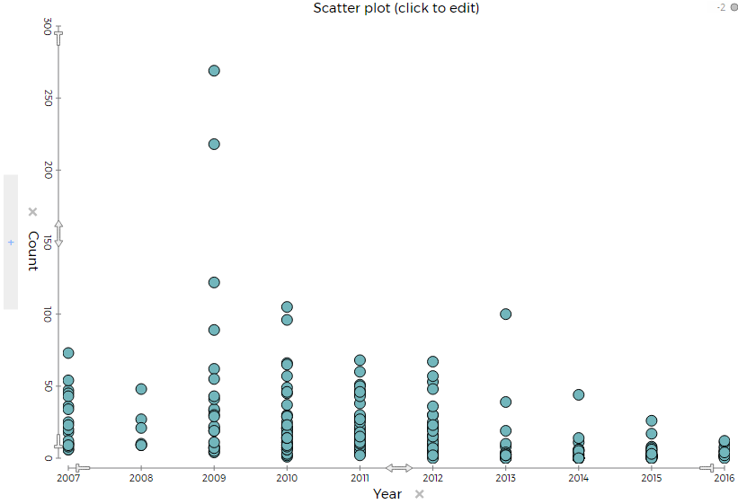
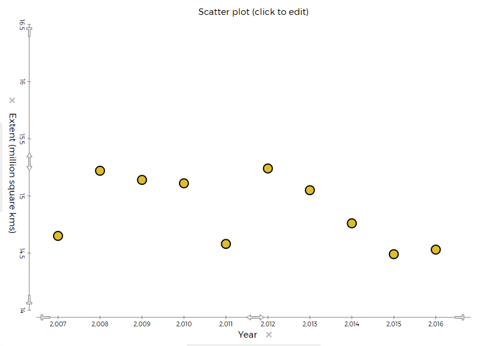

sea star info
Data
There seems to be more Ochre sea star when their is more global warming.
Visuals
 
conclusion
These graphs show that when their is more global warming there is more ochre sea stars.